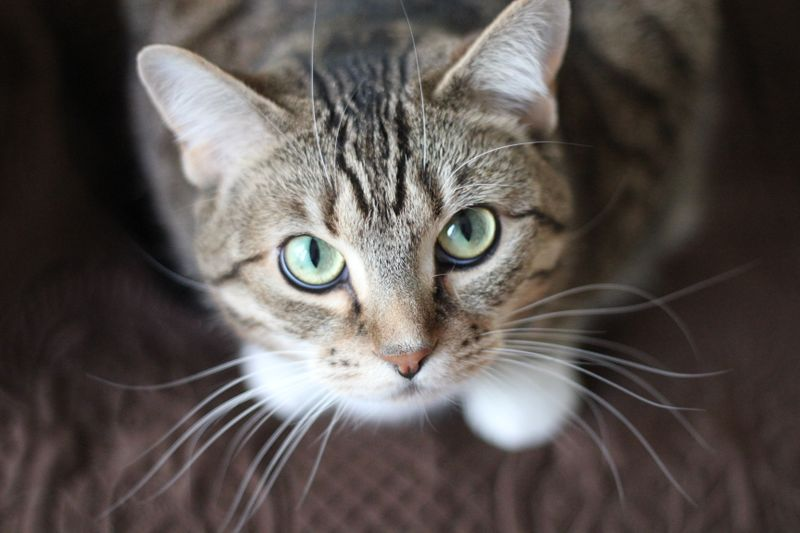
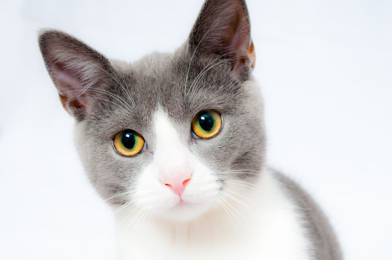
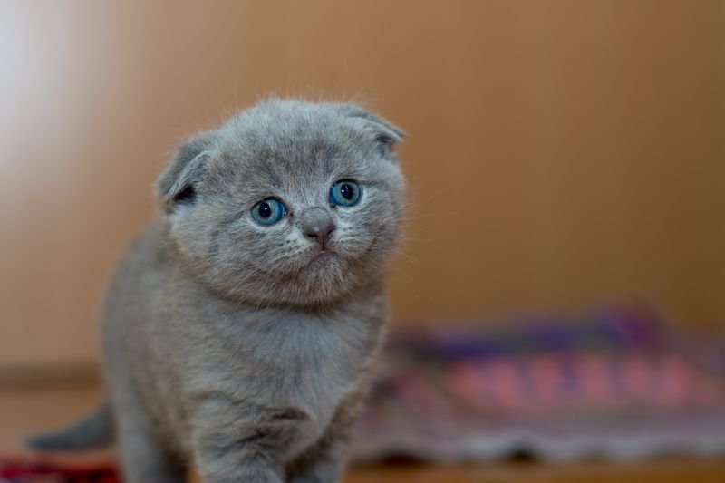
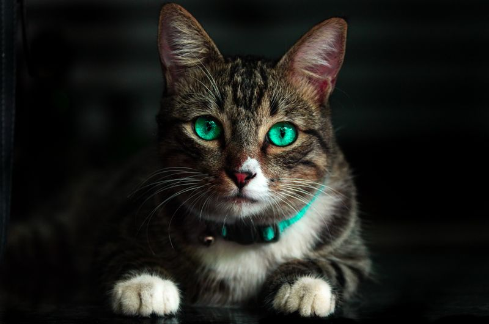

Praneet Koppula
makes complex software clear. lives with cats.

The setup
Product design leader, 18+ years. I lead teams and stay close to the work — making expert tools and AI workflows intuitive without hiding what makes them powerful. Visible state, user control, systems that scale judgment.

By the numbers
18+
years untangling complex tools
120
products in the governance ecosystem
4
countries, one lap at a time

Things made
An AI partner inside the engineering workflow · AI product vision, 2023–2024
Making complex model behavior inspectable · Technical workflow design, 2014–2016
Making Simulink diagnostics actionable · Interaction design, 2014–2017
Scaling task-based UI design across engineering apps · Design systems, 2014–2019
Reimagining Mask Editor as a technical authoring environment · Technical authoring, 2014–2017
Turning design judgment into a team capability · Quality at scale, 2020–2023
Scaling a distributed UX organization through leadership systems · Organization design, 2022–2024
Designing a classroom computer as a classroom system · Field research, 2008–2009
Designing mobile money from household financial life · Field research, 2009
Researching urban wayfinding in the field · Field research, 2010
Agent-callable UX validation for AI-generated apps · AI experiment, 2026
Turning mobile acquisition data into a clearer homepage · Growth design, 2026


